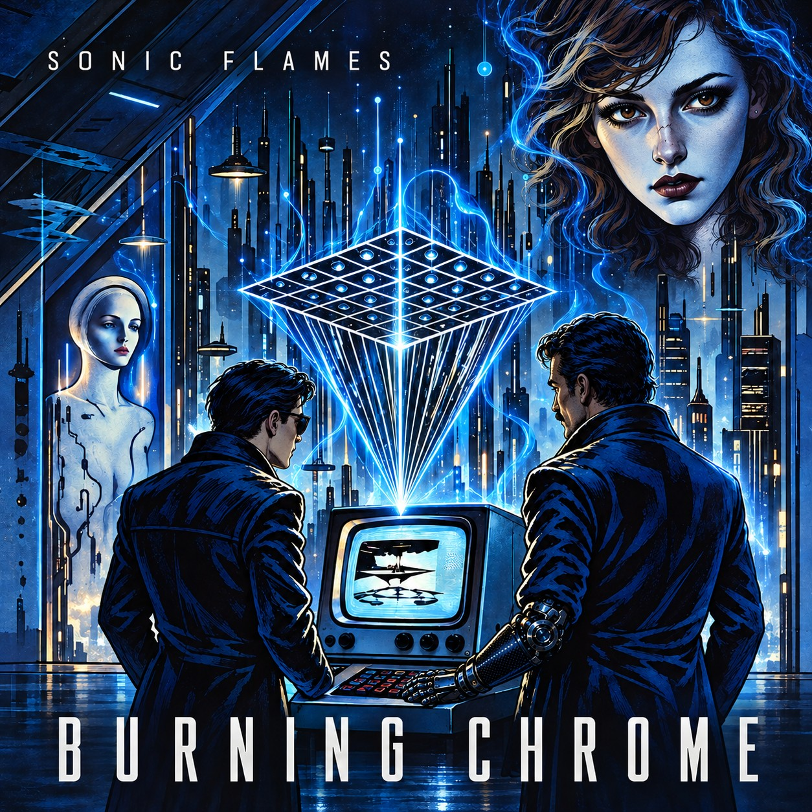

SONIC FLAMES · A CONCEPT ALBUM
The Burning Chrome
Symphony Dreamscape
Ein großer Coup.
Drei Menschen. Unvereinbare Träume.
Eine musikalische Reise durch William Gibsons Burning Chrome. Fünfzehn Songs, fünfzehn Bilder – und die Geschichten dahinter.
01—15ZWISCHEN TECHNIK UND SEHNSUCHTDE / EN
DAS ALBUM IN 15 KAPITELN
Folge der Geschichte.
Jeder Song öffnet eine andere Tür. Höre das Album der Reihe nach oder wähle deinen Einstieg.
HINTER DEM ALBUM
Fünfzig Jahre.
Ein musikalischer Traum.
1975: eine Idee.
Fünfzehn Songs später: eine eigene Geschichte.
DIE LITERARISCHE VORLAGE
SONIC FLAMES
Gemeinsam entstanden.
Mit Scott am Gesang, Tobias am Schlagzeug, Florian am Bass und Michi am Klavier. Mehr über ihre Beiträge erfährst du in den einzelnen Kapiteln.
- Scott West Vocals
- Florian Sonntag Bass
- Tobias Meyer Drums · Piano (01–14)
- Michael Bollow Guitars · Synthesizer
- Michi Kalab Piano · Chiba City